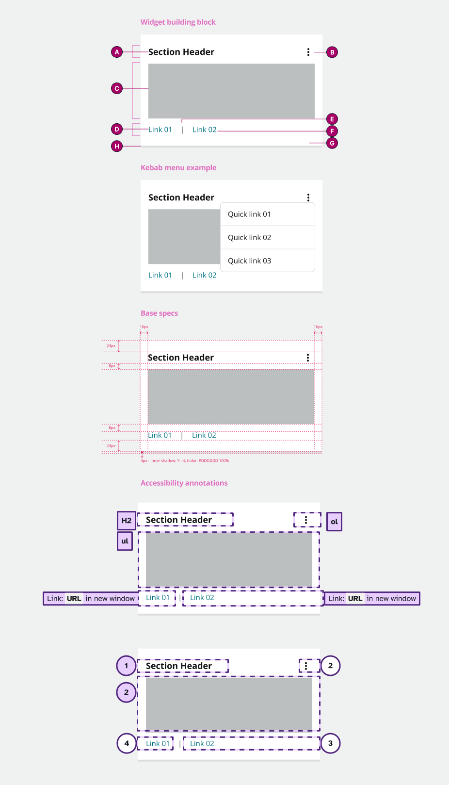
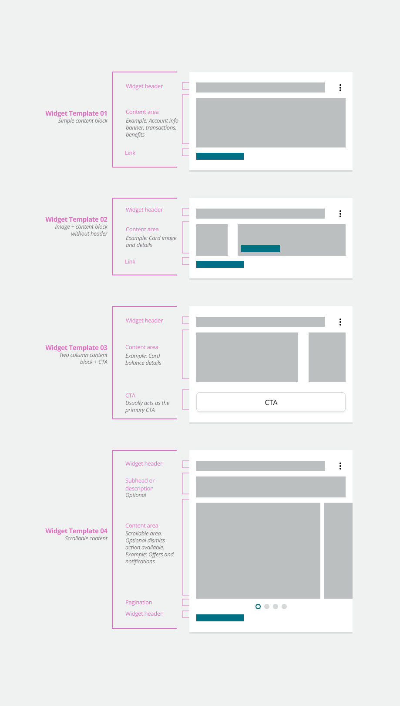
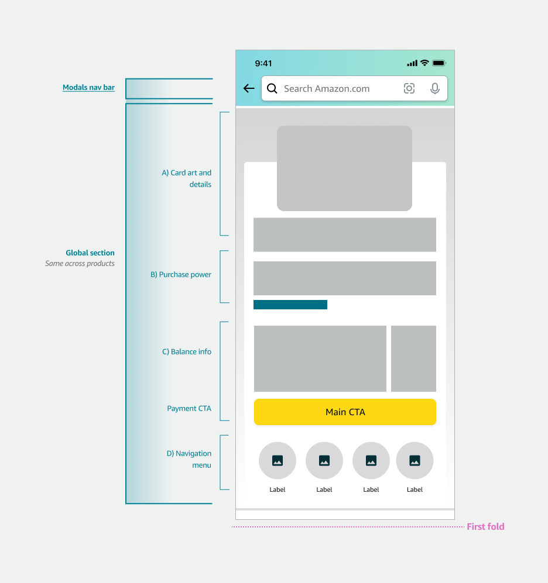

Designing the Existing Card Member Page — a personalized hub for Business Prime card holders to manage their card, view rewards, and take action. Built end-to-end with a widget system designed for flexibility and scale.
The Existing Card Member (ECM) Page is where Amazon Business credit card holders manage their balance, rewards, payments, and more. I led design end-to-end — from research through production — working alongside PMs and engineers.
The existing page had a rigid layout, poor feature discoverability, and a navigation pattern that couldn't scale. The new design introduced a flexible widget system that allows extreme personalization without breaking visual consistency.
Shipped Spring 2024 and live in the Amazon Shopping app. Explore the Figma file →
Before touching layout, I mapped the core usability failures. Poor discoverability was the intersection of three compounding issues — each making the others worse.
Customer problems — poor discoverability emerged as the convergence point of three separate issues.
Features were mapped by frequency and user experience value to establish a clear page hierarchy. High-frequency utilitarian features go above the fold; lower-frequency inspirational content sits further down.
Hover each row — features mapped by user experience value and usage frequency determine vertical position on the page.
The core challenge: build a page that could be radically personalized per cardholder without creating fragile one-off layouts. The solution was a composable widget system — building blocks with a consistent anatomy that adapt internally based on content type.


The page is split into a fixed global section (card art, balance, navigation) and a flexible widget zone below. An early decision: section dividers vs. cards. Dividers won — they accommodate multi-item content, text-heavy layouts, and scale across folds without extra margin overhead.

Page structure — fixed global section above, flexible widget zone below.

Section dividers vs. cards — dividers won for flexibility and text-heavy content.
The final mobile prototype, shipped Spring 2024. Tap through to explore Card Overview, navigation patterns, rewards, and the widget-based content layout.
Navigation was the key friction point in research — users struggled to find card features. Five patterns were explored and user-tested. Pattern #2 (dropdown expanded, pushes content) was selected for its familiarity, scalability, and match to customer expectations.